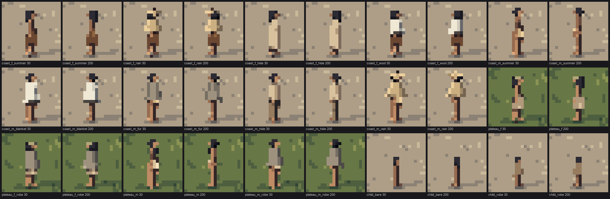
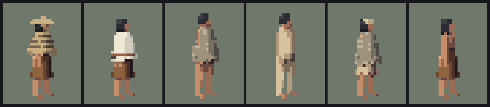
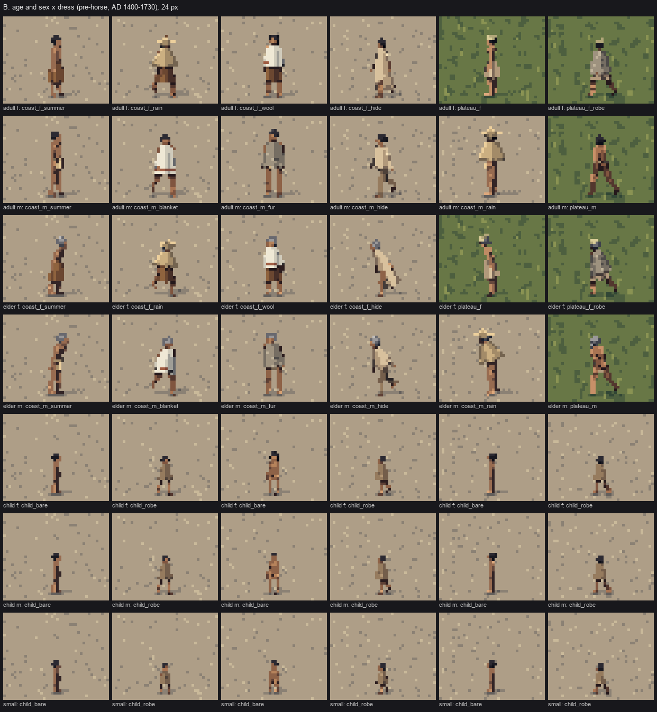

3. Dressing people from written sources, with care
Back to the tutorial. Code: person.build (garments, hats, props, DRESS), render.shade (the pattern codes), pal.py (material colours), in ~/work/pixelart-studies/elements/people/src/. Source: the naturalist's guide ~/work/naturalist/people/06-dress-tools-crafts-canoes.md.
Where the dress comes from
The honest problem with painting pre-contact dress is that nobody photographed it. The naturalist's caution was the first thing I followed:
Nineteenth-century photographs (Curtis above all) show people after 50–100 years of trade cloth, glass beads, iron and horses, and Curtis sometimes staged dress. Use them for faces, bodies, baskets, hats, houses and landscape; for pre-contact dress, lean on the written descriptions below.
So the garments are built from words: the dress table in guide 06, drawn from Haeberlin & Gunther 1930, Eells 1877 and Spier & Sapir 1930. It's organised by region, season and means, and my fifteen outfits follow it one to one:
| outfit | from the guide |
|---|---|
coast_f_summer |
"a knee-length skirt of shredded cedar bark from the waist; nothing above" (poorer women) |
coast_f_rain |
the same "plus a twined cedar-bark cape to the hips", and a wide-brimmed twined rain hat |
coast_f_wool |
the skirt with a cream blanket of mountain-goat or wool-dog wool over the shoulders |
coast_f_hide |
"buckskin shirt from shoulders to below the knee" (the well-to-do) |
coast_m_summer |
"naked or a breechclout" |
coast_m_blanket, coast_m_fur |
the breechclout with a wool blanket or a fur robe |
coast_m_hide |
a buckskin shirt to the hips and separate leggings (the well-to-do, winter) |
coast_m_rain |
the cape and hat |
plateau_f, plateau_f_robe |
"a fringed kilt or apron of fibres or skin from a belt, with a robe above", and the twined basket hat |
plateau_m, plateau_m_robe |
a breechclout and fur robe, hair "in two queues in front of the body" |
child_bare, child_robe |
"naked in summer on both sides of the mountains; a little shirt or robe otherwise" |
All of it is pre-horse. After about 1730 the Plateau took up Plains dress (the long two-hide buckskin dress, quilled shirts, leggings, moccasins), and none of that appears here. Most people went barefoot, which suits pixels: feet are one skin pixel.
Care: what I left out, and why
These are the ancestors of living communities. The naturalist's start page gave the rule I followed everywhere: "Lifeways, not identities."
- No ceremonial or sacred subjects. My search "Curtis Kwakiutl woman bark" returned masks, dance regalia and a ceremony; I deleted the folder on sight. I also removed Curtis's whaler, whose subject carries ceremony with it. Every activity in the code is everyday work, rest or play from the guides: digging camas, carrying, fishing at the weir, splitting cedar, weaving, tending a fire, eating, children playing.
- No designs. The guide is explicit that basket dog-bands, Salish blanket patterns and Plateau sally-bag figures "belong to living communities". Blankets get one alder-red band and one black band near the hem. Baskets get horizontal rows in the straw ramp. Nothing is copied.
- No tribal names, no site locations. Outfits are named by region and season, not by people.
- Nothing caricatured. The guide mentions infant head shaping, well documented among free-born coastal families, and adds: "At pixel scale it's invisible, and I would not caricature it." I didn't draw it. Faces are a skin capsule framed by long black hair, the same for everyone, varied only in skin tone.
The studio critic's closing words were "'lifeways, not identities' was followed throughout, and it's the reason this set can be used." If you take one thing from this page, take that a small-figure set is only usable if it's careful.
The three masses
The guide's figure note is the spec for how dress must read: at 10 m, "silhouette and three masses (hair, garment, skin)". My first figures failed it. Skin and skirt were the same tan, and the studio critic's first note was that the figure "reads as one unclothed column".
The fix was a value step, not a hue change:
- Bark: the skirt ramp is darker and redder than the guide's suggested raw-bark colour (
('#2a160e', '#64381e', '#946034')). - Skin: a warm brown with a deeper midtone, in three tones chosen by seed: 50%
SKIN, 30% the darkerSKIN2, 20% the lighterSKIN3. - Hair: black with a faint blue-grey sheen, never grey (the first hair was a "slate-grey helmet").
What reads at 16 px:
- cream wool (a white rectangle);
- the rain hat (a pale disk);
- the grey fur robe;
- black hair.
Bark and skin separate only by that value step.

study. The fifteen outfits at 32 px from two sides.

study. The same at 16 px. The blanket, the rain gear and the fur robe carry the figure; the summer figures depend on the value step at the waist.
Garments are capsules that swallow the limbs
A garment is a bigger capsule in the same z-buffer as the body, so it hides whatever is inside it:
- The skirt is a cone from the waist to the knees, spreading with the stance.
- The cape is a bell-profile cone from the neck to the hips.
- The blanket is a wider bell from the shoulders past the pelvis.
def skirt(mat, length=1.0, rtop=0.088, rbot=0.105, fringe=True):
# the hem hangs from the knees (or over the thighs when sitting)
hem = waist + (knee_mid - waist) * length + v3(0, -0.04 * length, 0)
spread = np.linalg.norm((J['knL'] - J['knR'])[[0, 2]]) * 0.5
add(waist, hem, rtop * st, max(rbot * st, spread + 0.05 * st), mat, prof='lin', caps=False,
tag='skirt', zb=0.8, minw=MW(0.7, 0.35),
pattern=(lambda tc, xs, ys: np.where(tc < 0.07, 2.0, 1.0)) if fringe else None,
hem=0.12 if fringe else 0.0)
def cape(mat, length=1.0, r1=0.19, tag='cape', pattern=None, hem=0.1):
top = J['neck'] - up * 0.005
bot = J['pelvis'] + up * (0.02 + (1 - length) * 0.25) - up * max(0, length - 1) * 0.45
add(top, bot, 0.07 * st, r1 * st, mat, prof='bell', caps=False, tag=tag, pattern=pattern or twine,
zb=0.8, minw=MW(0.9, 0.2), hem=hem)
Three details matter:
zb=0.8, a depth bias. Without it, a leg or arm inside the skirt sometimes won the z-test, and at 6 px the whole woman was hair and one arm (how-to 1).caps=False. The garment ends flat at the waist and hem instead of rounding into a sausage.hem, the fringe. Shredded bark and twined capes don't end in a straight line, so the rasterizer cuts each screen column at its own length near the far end of the capsule:
python
if prim.hem > 0:
# a fringed / ragged hem: each screen column ends at its own length near the far end
u = ((xs * 2654435761) % 1000) / 1000.0
u2 = (((xs + 17) * 40503) % 997) / 997.0
cut = 1.0 - prim.hem * (0.5 * u + 0.5 * u2)
inside &= t <= cut + 0.02
The cut is a hash of the column, so the fringe stays put as the figure moves; a random fringe boiled.
Texture inside the mass, as pattern codes
Each garment can write a small integer per pixel (cv.pat) that the shader reads as a step offset or a material swap:
| code | meaning | where |
|---|---|---|
| 1 | fringe strands: every third column one step down | skirt, cape, shirt hems |
| 2 | waistband one step down, or the black band on wool | skirt top; blanket hem |
| 3 | vertical folds one step down | wool blanket |
| 4 | twining rows one step down | cape, ≥ 40 px only |
| 5 | fur: scattered lit hair tips and dark tufts | fur robes, child's robe, ≥ 18 px |
wool = mat == M['WOOL']
mat = np.where(wool & (pat > 0.5) & (pat < 1.5), M['BAND'], mat) # alder-red band
mat = np.where(wool & (pat > 1.5) & (pat < 2.5), M['DARKB'], mat) # black band
step = np.where(wool & (pat > 2.5), step - 1, step) # vertical folds
furh = ((xs * 73856093) ^ (ys * 19349663) ^ (seed * 83492791)) % 9
step = np.where((np.abs(pat - 5) < 0.5) & (furh == 0), step + 1, step) # lit hair tips
Every one of them is gated by size. The twining rows first switched on at 20 px, and they turned the rain cape into a striped poncho. They now appear only at 40 px and above.

nb098. Rain gear, wool, fur, buckskin, a Plateau robe, a bark skirt at 32 px, 8×, after fringed hems and fur. (The twining rows in the cape here were later restricted to 40 px.)
Hats and props that the guide calls distinctive
- The rain hat is a flat disk (a primitive that draws a horizontal ellipse, half-height r · sin e plus a pixel) with a low cone crown and a dark knob. The guide calls the cape and hat "a cone on a cone", and it's the one figure that reads at every size, down to 6 px as a pale bar over a pale block.
- The Plateau basket hat is a short open cylinder, "brimless, fez- or flower-pot-shaped", with one band.
- The tumpline runs from the basket's rim over the top of the head, drawn on the hair (a depth bias of 3), in pale bark so it shows against black, ending in a band across the forehead. At first it ran through the hair sphere and was invisible.
- The cradleboard is held across the body in both arms, with the baby's head at the top.

study. Sheet B, age and sex × dress at 24 px. Elders have grey hair and a stoop.
Where it falls short
- Bare children at 24 px are 1-px sticks (rows 5–7 above). A child needs a bigger head and a 2-px torso; the critic said so and it's the first thing I'd fix.
- The rain hat's crown at 24 px can read as "a small cross or star on the head". The low cone and knob help but it's still fussy; one pixel of dark knob on a flat pale disk would be cleaner.
- The buckskin shirt and leggings read as pale pyjamas. The sleeve fringe exists in the code but hardly shows.
- The Plateau queues are invisible below 24 px.
- No reference ever showed these garments in motion. A licensed museum or tribal illustration of people wearing cedar-bark skirts and capes would be worth more than any photograph I found.